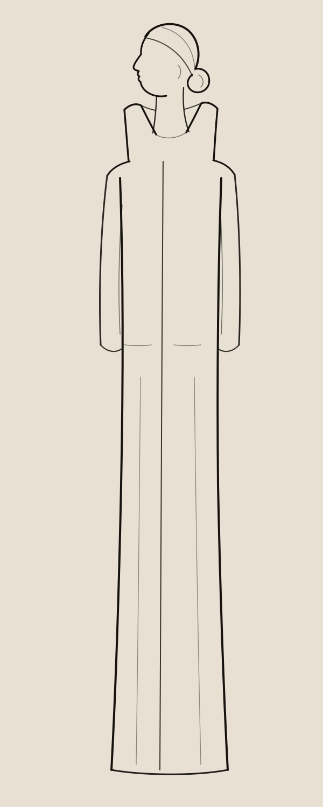
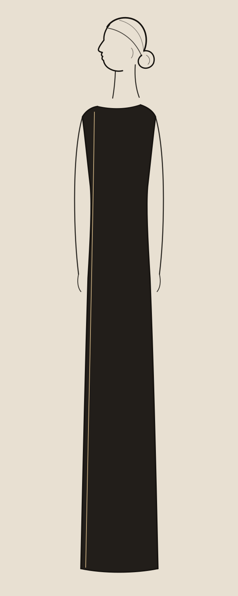
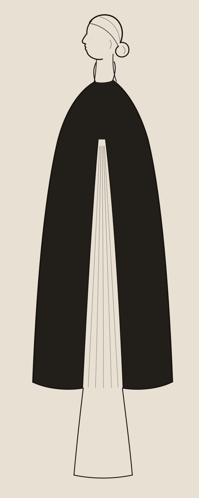
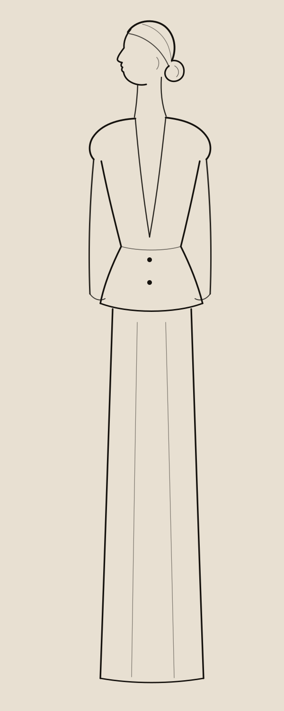
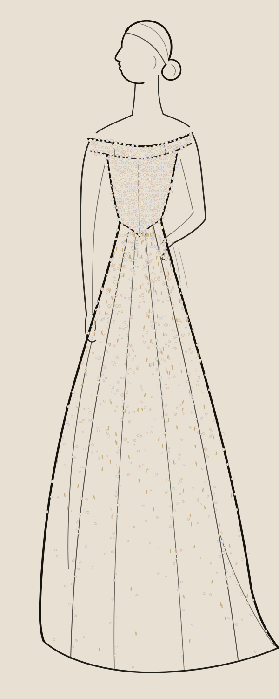

Between midnight and dawn, the atelier keeps its own hours.
For its Autumn–Winter 2026–2027 Haute Couture collection, Maison Veyrande returns to the hours the city never sees: the lamps of the atelier at the top of the house stay lit, and seventeen pairs of hands work in silence.
The palette is the atelier's own. Ivory duchesse satin and silk gazar, the colour of the toile before the first cut. Ink, for the sketch and for the night outside the window. Champagne, for the lamplight on the silk.





Ivory silk organza, embroidered by hand with mother-of-pearl sequins and champagne glass beads, by seventeen hands over eleven weeks. The embroidery follows the lines of the first sketch, stitch for stitch.
Couture is made in the white hours, when the city sleeps and the hands keep working.Odile Sorrèze · Creative Director
Presented on 6 July 2026 in the grand salon of the Maison, Paris, to an original nocturne for piano and string quartet, performed live.
Maison Veyrande is a fictional couture house created for this example. All names, looks, dates and figures are invented.